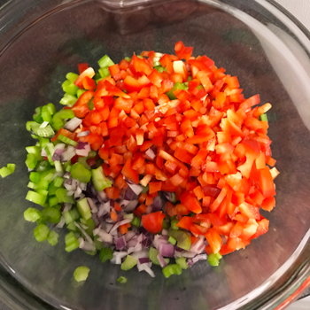
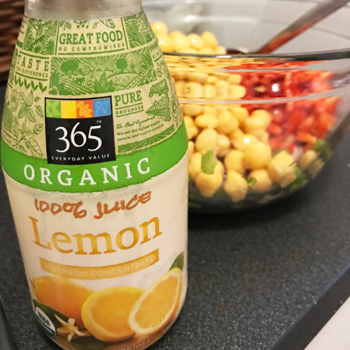
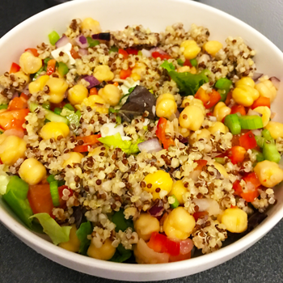

Nicole Andujar • Bio Card
Nicole Andujar • Bio Card
Here's one of my favorite recipes:Vegetarian Chickpea & Quinoa Salad
-

Step 1
Chop:
1/4 onion
1 red bell pepper
4 celery stalks
Mix in 2 cans of Chickpeas -

Step 2
Add:
4 tbsp. of Lemon juice
1 tbsp. Olive Oil
Pinch of Salt -

Step 3
Add:
1/2 cup of cooked quinoa
Mix everything together
ENJOY!